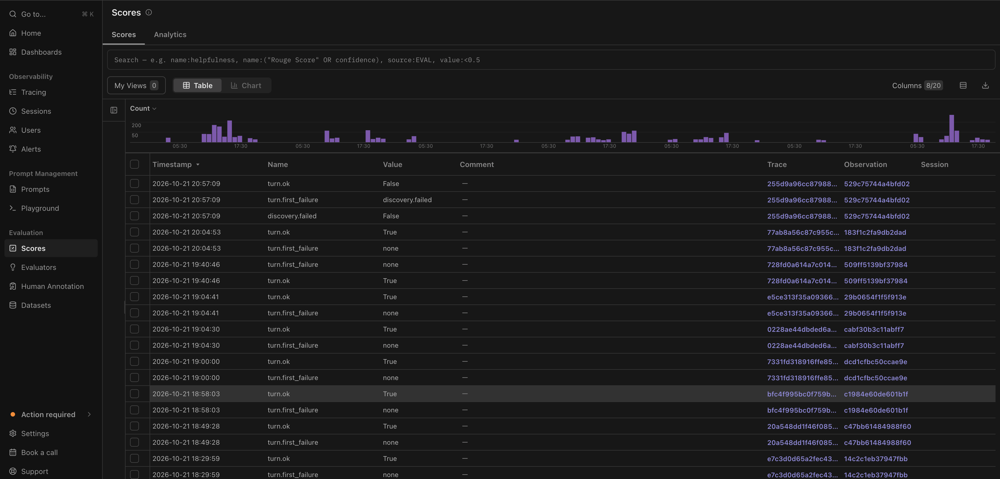

Server-side turn checks run when a turn's trace completes. They turn observability into guardrails: every turn is measured against budgets, and the results are stored as scores you can filter and chart.
The facts a check needs
@dataclass
class TurnFacts:
trace_id: str
duration_s: float
llm_calls: int
slowest_llm_call_s: float
input_tokens: int
output_tokens: int
cost_usd: float | None # None when prices are not configured
reply_chars: int
failure_reason: str | NoneCollect these while the turn runs (counters in the tracing layer), not by querying Langfuse afterwards. The checks then run synchronously at the end of the turn.
Typical limits (configure per environment)
| Check | Example limit | Catches |
|---|---|---|
| Max LLM calls per turn | 6 | Planner loops |
| Max turn duration | 20 s | Hung upstream calls |
| Slow LLM call | 8 s | Provider latency, oversized prompts |
| Max cost per turn | $0.05 | Runaway prompts (only when prices are configured) |
| Max reply characters | 3,000 | Huge replies that overwhelm mobile clients |
Skip the cost check entirely when prices are not configured, rather than recording a misleading pass.
Recording results
Each check writes a boolean score to the trace (for example within_llm_call_budget) with a comment containing the actual value, and logs a structured warning when it fails. In Langfuse you can then filter traces by failed checks and chart pass rates by release.

How I use them during development
- A failed cost or call-count check on golden cases blocks a prompt change that adds tools, until it is understood.
- A rise in failed latency checks after a deploy points straight to the slow observations.
- Weekly, I look at the pass rate trends. A slow decline usually means the catalog is growing.
Pair turn checks with golden evals: checks catch runaway behaviour on every turn; golden cases catch wrong capability choices on known scenarios.
Terms on this page
- Turn check
- Automated policy evaluated on TurnFacts after a chat turn.
- MTok
- Millions of tokens; pricing unit for many model APIs.
Your progress in Langfuse Lab0 of 7 complete